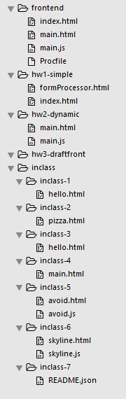

So far we've been hosting our pages on our local machine and viewing them directly with our web browser. This is fine until we want to share our creations with others. To do this we deploy our web site, later to be a web application, to the cloud. We will be using Heroku because of their free tier and overall simplicity in usage. Later in the class we will talk about alternative hosting solutions.
First you will need to sign up for an account. We will be using some plugins which technically may cost money if you exceed the free tier. Therefore they require a credit card, but so long as you stay in the free tier they will not charge you -- I have never been charged. After you have an account and are signed in you need to download the Heroku Toolbelt. If you do not already have a Git client installed, they bundle one for you. We use Git to talk to Heroku.
You will need to be logged in to Heroku to proceed:
heroku login
Now is the time when we want to organize our workflow. Each class session we submit an inclass exercise. We also submit our homework assignments. Both of these should be distinct from our working directory where we develop our code and run our application. The primary reason for this is that the .git directory and other modules that we will later install are not necessary to Turnin and only make the Turnin process more painful. Therefore I recommend you have the following directory structure:
The workflow is then to develop your application in the working directory frontend and when you are ready to Turnin, you
copy your files to the appropriate Turnin directory.
Copy your hw1-simple and hw2-dynamic files
to this new frontend directory. We need to create
one additional file named Procfile which is done below.
To deploy to Heroku start by navigating to frontend.
You will want to come up with a name for your application. Note that
later in the course we will create new applications so as to not "stomp" over previous homework submissions. So the name you pick here will not necessarily be the final name of your final social networking app (and we can always change the name later). In the example below, I have named my application ricebookapp, which should be replaced with your chosen name, or leave blank and Heroku will assign a name for you.
These names are world unique, therefore your name may have already been chosen, so pick another or let Heroku give you a name.
cd frontend git init heroku create ricebookapp echo web: bin/start-nginx -f > Procfile git add Procfile index.html main.html main.js git commit -m 'initial commit' heroku buildpacks:set https://github.com/skotep/nginx-buildpack.git git push heroku master heroku ps:scale web=1
Now your soon to be app is hosted and running on Heroku. Navigate to, e.g., https://ricebookapp.herokuapp.com to see it.
What did these steps do? We started by creating a new git repository. We then created a new Heroku application that was tied to it. (The order of these operations matters because if you create the Heroku app first then it will not be attached to the git repo. If you did this, then to fix it execute heroku git:remote -a ricebookapp) Next we defined the command that Heroku will execute to start our application (Procfile). Notice that it executes "start-nginx" which implies we have an Nginx server running that will surface
our (static) front-end application (we'll talk more about Nginx later in the course). Next we add all of our files to the git repo. We commit the changes. We then tell Heroku that we'll be using Nginx for our application (as opposed to node, ruby, python, etc). Finally we push to the remote Heroku git master. Heroku builds our application and spins up the Nginx server.
For inclass-7 submit a file named README.json that has the following contents (replaced with *your* values of course)
{
"netid": "sep1",
"frontend": "https://ricebookapp.herokuapp.com"
}
Note that we will continue to use this frontend directory as we develop our web application but
will submit from separate hw# directories for our assignments. Those hw# directories should only have
our "content" i.e., will not include the hidden .git directory.